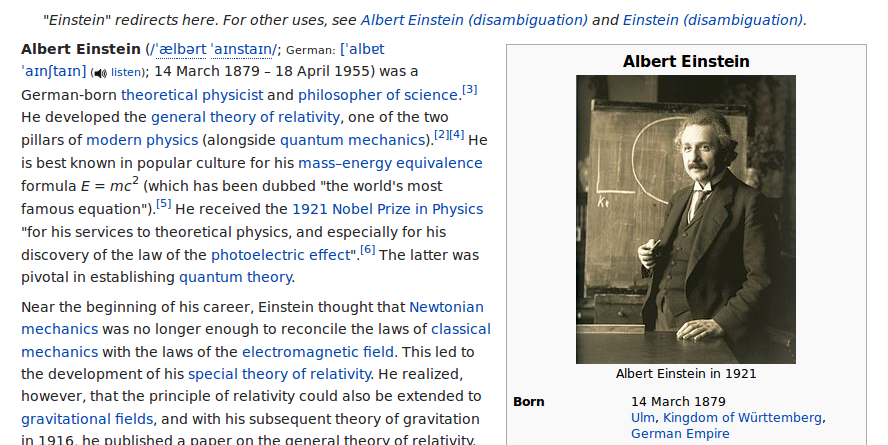
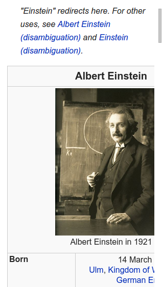
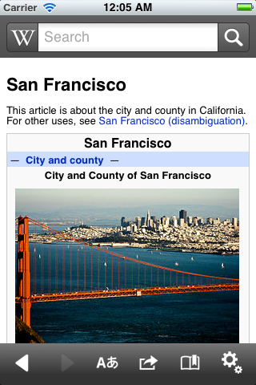
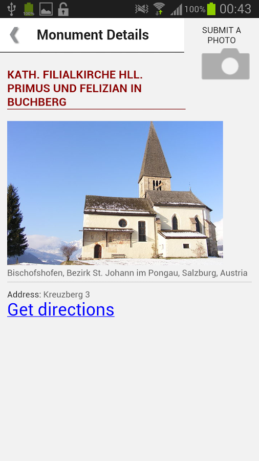
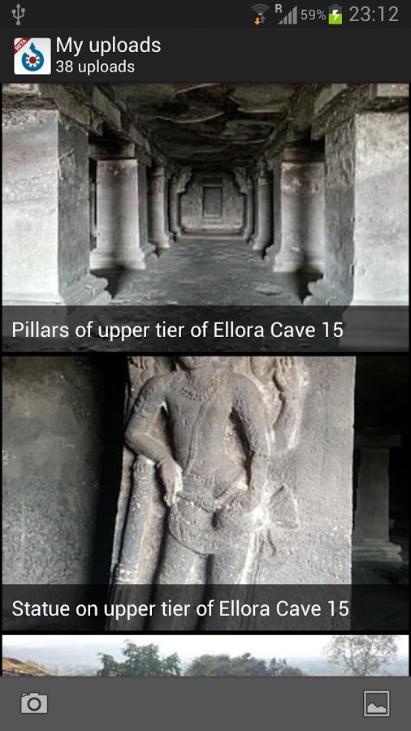
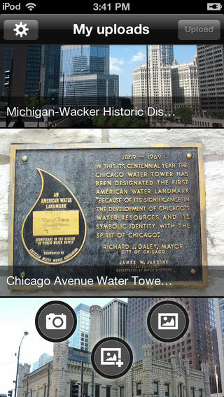
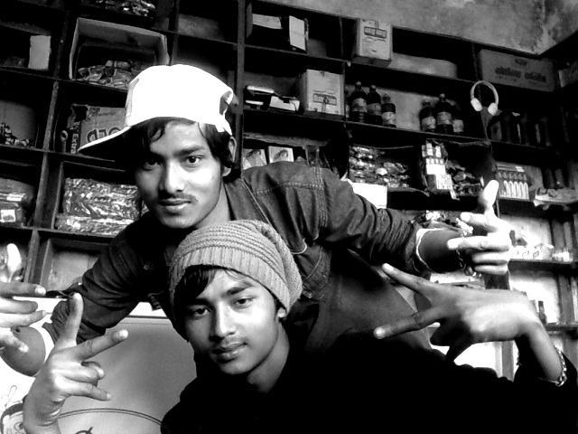
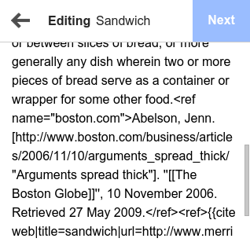
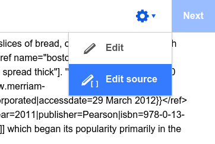
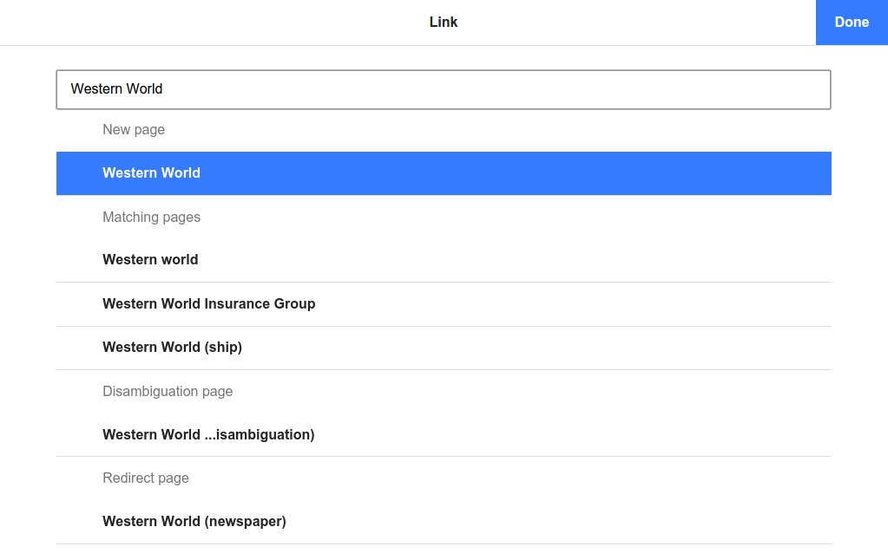

Wikipedia móvil: pasado, presente y futuro
Juliusz Gonera
Fundación Wikimedia
jgonera@gmail.com
http://juliuszgonera.com/slides/wiki-usj/
13 de septiembre 2014
28º día del año
Yo
- Ingeniero de programación de Łódź, Polonia.
- Estudiante Erasmus en Universidad Politécnica de Valencia.
Fundación Wikimedia
La misión de la Fundación Wikimedia es facultar y animar a la gente de todo el mundo a reunir y desarrollar contenido educativo neutral bajo una licencia de contenido libre o en el dominio público, y a difundirla de manera efectiva y global.
(...) La Fundación proporcionará y mantendrá el contenido educativo de sus proyectos en Internet sin cargo alguno a perpetuidad.
https://meta.wikimedia.org/wiki/Mission/es
Fundación Wikimedia
Imagina un mundo en donde cada persona del planeta pueda tener acceso libre a la suma total de todo el conocimiento humano. Eso es lo que estamos haciendo.
Jimmy Wales
Entonces trabajas gratis?
No.
El contenido esta creado por voluntarios.
Hacer que Wikipedia (y otros proyectos) funcione es un trabajo de hornada completa.
Nuestros fondos vienen de donaciones, tanto de los particulares como de las empresas.
Dónde?
- San Francisco, California, USA (~120 personas)
- Resto del mundo, a distancia (~50 personas)
Quien?
- 38% extranjeros (no de EEUU)
- 72% han vivido fuera de su país
- 46% son wikipedistas
2012-2013 en numeros
- Mitad de los mil millones lectores cada mes (~30% por la versión móvil).
- Más que 280 idiomas.
- Colaboradores hiceron 160.2 millones de cambios,
- añadieron 4.9 millones de artículos en Wikipedia,
- subieron 4.3 millones de imágenes, ficheros de audio y video.
Reglas de Wikipedia
- Conducido por la comunidad.
- Todos pueden editar, cambios se ven inmediatamente.
- Contenido disponible bajo licencias libres (típicamente Creative Commons).
- En la mayoría de los casos no permite editar por dinero (conflicto de interés).
Otras páginas

Software
Todas las páginas usan MediaWiki.
- Open source, todos pueden contribuir.
- Soporte para muchos idiomas y escritos, también de escritura de derecha a izquierda.
- Tiene un sistema de extensiones.
Retos y dificultades
- Mucho tráfico.
- Comunidad caprichiosa.
- Dispositivos móviles antiguos.
- Asuntos legales.
- Mucho trabajo, pocas personas.
Retos y dificultades
Soporte para varios idiomas.

Retos y dificultades
Contenido no preparado para pantallas pequeñas.
Retos y dificultades
Contenido no preparado para pantallas pequeñas.
Proyectos principales
- Mobile Web + Apps
- VisualEditor
- Flow
- Experimentos beta
Mobile Web
Mobile Apps
Evolución de Mobile
- Junio 2009: Primera versión de Mobile Web en Ruby
- Septiembre 2011: Segunda versión de Mobile Web en PHP
- Marzo 2012: Nuevo dieseño de Mobile Web
- Abril 2012: La primera app de Wikipedia en PhoneGap
- Septiembre 2012: Wiki Loves Monuments app
- Marzo 2013: App para Wikimedia Commons
- Junio 2014: Mobile web por defecto para tabletas
- Julio 2014: Nuevas apps para iOS and Android
Primera versión de Mobile Web

Nuevo diseño de Mobile Web
Mobile Web ahora


Dos niveles de soporte
-
Con JavaScript
- todos los smartphones modernos
- tabletas
-
Sin JavaScript
- móviles antiguos
- Opera Mini
JavaScript en Mobile Web
Un framework pequeño inspirado por Backbone.
var Character = Class.extend({
// constructor
initialize: function(name) {
this.name = name;
},
attack: function(other) {
console.log(this.name + ' attacks ' + other.name +
' with ' + this.weapon);
}
});
JavaScript en Mobile Web
var Jedi = Character.extend({
weapon: 'light sabre'
});
var Cat = Character.extend({
weapon: 'fangs',
initialize: function(name) {
this._super(name + 'cat');
}
});
JavaScript en Mobile Web
var luke = new Jedi('Luke');
var bob = new Cat('Bob');
bob.attack(luke);
// => 'Bobcat attacks Luke with fangs'
luke.attack(bob);
// => 'Luke attacks Bobcat with light sabre'
Javascript en Mobile Web
-
View
- Overlay
- Api
View
var Button = View.extend({
template: '',
defaults: {
label: 'Tap me'
},
postRender: function() {
this.$('.msg').text('Thanks!');
}
});
var button = new Button();
button.appendTo('body');
Overlay
Overlay
var MyOverlay = Overlay.extend({
defaults: {
heading: 'Hello'
}
});
var overlay = new MyOverlay();
button.on('click', function() {
overlay.show();
});
Api
var EditorApi = Api.extend({
...
});
var EditorOverlay = Overlay.extend({
_onSave: function() {
...
this.api.save(options).done(function() {
// show success message
}).fail(function() {
// show error message
});
}
});
Back button
Cuando abrimos overlay, muchos usuarios no van a saber si es una página nueva o no y por el instincto van a usar el botón de atras para cerrarlo.
Díficil de implementar por mal soporte de History API en Android Browser.
Por eso usamos el evento hashchange.
Rendimiento
-
Cache, cache, cache
- Varnish
- cache del contenido de artículos
-
El mínimo de peticiones posible
- Minificar y concatenar todo el JS y CSS
- Incorporar ficheros gráficos en CSS
- No cargar JS que se usa raramente al principio
- Gzip para todas las peticiones no binarias
- Optimización de la compresión de imágenes (optipng, advpng, advdef, svgo)
Tests
- QUnit en JavaScript
- PHPUnit en PHP
- Cucumber + Watir (Ruby) para los tests en el navegador
Tests en el navegador
Feature: Toggling sections
Scenario: Opening a section on mobile
Given I am using the mobile site
And I go to a page that has sections
When I click on the first collapsible section heading
Then I see the content of the first section
Git hooks
Antes de git commit:
- JSHint
- QUnit
- PHPLint
- PHPUnit
- Compresión de PNG y SVG
Mobile Apps
La primera versión en PhoneGap.
- Muy difícil de depurar.
- Problemas con rendimiento.
- Problemas con diferencias visuales en plataformas con diferentes navegadores.
PhoneGap app
Wiki Loves Monuments
Wikimedia Commons
App dedicada para subir fotos, para "power users".
Las primeras apps nativas, para iOS y Android.
Wikimedia Commons
 Nuevas apps nativas de Wikipedia
Mobile Web no está mal, pero los navegadores móviles todavía no son tan buenos como los del escritorio.
- Más rápidas, más responsivas
- La posibilidad de leer offline
- De momento no optimizadas para tabletas
- Usan API de Mobile Web para obtener el contenido
App para Android
App para Android
- Maven (pronto Gradle).
- Unit tests y functional tests, de momento requieren un dispositivo Android o un emulador.
- En el futuro (cercano) Android Studio como el entorno de desarrollo.
App para iOS

App para iOS
- XCode 6
- Grunt
- Tests no están muy actuales porque hasta hace poco XCode no soportaba tests asíncronos.
Contribuciones móviles
Al principio Mobile Web servía solo para leer Wikipedia.
Después del éxito de Wiki Loves Monuments y la app de Wikimedia Commons, introdujimos una posibilidad de subir fotos en Mobile Web.
Al principio nos emocionamos mucho con la cantidad de contribuciones...
...pero pronto nos decepcionamos viendo que tipo de fotos eran.
Selfie apocalypse
Editor móvil
A quien le gusta escribir en el móvil?
A nadie. Pero la gente lo hace de todas formas.
El primer editor en Mobile Web era solo un experimento, pero los usuarios estaban muy interesados.
En agosto más de 40K usuarios editaron con la versíon móvil y hiceron casi 200K cambios.
Editor Visual
El wikitexto es difícil de escribir en los dispositivos móviles.
Editor Visual
Editor Visual se puede activar en las tabletas.
Editor Visual

Editor Visual
Microcontribuciones
Hemos fallado con las fotos, pero que otro tipo de contribuciones pequeñas podemos intentar?
WikiData, un repositorio de datos estructurados.
Juego de WikiData

Como planeamos el trabajo
Usamos metodologías ágiles.
- Tenemos sprints de 2 semanas.
- Escribimos "stories".
- Repasamos stories, product manager + ingeñero(s) + dieseñador(es).
Trello
Como coordinamos el trabajo
- Hacemos standups los lunes, miércoles y viernes.
- En los standups decimos que estamos haciendo y si necesitamos ayuda de otros miembros del equipo u otros equipos.
- También miramos los bugs que vinieron en los últimos dos días y decidimos su prioridad.
- Todos los meetings tienen Google Hangout para participantes fuera de la oficina.
Hangout

Como participar
No hay que trabajar para la fundación. Todos los proyectos de la fundación son open source.
-
https://git.wikimedia.org/
- mediawiki/extensions/MobileFrontend
- apps/ios/wikipedia
- apps/android/wikipedia
- https://gerrit.wikimedia.org/
- https://bugzilla.wikimedia.org/
Como saber que hacer?
- Mobile-l @ https://lists.wikimedia.org/
- #wikimedia-mobile @ irc.freenode.net
- Bugzilla
- REA
Dónde buscar ayuda?
- https://www.mediawiki.org/ (un poco desorganizado, mejor usar el buscador)
- https://doc.wikimedia.org/
- Lista de correo (Mobile-l) o IRC (#wikimedia-mobile)
Vagrant
MediaWiki es un proyecto grande y complejo. La instalación de todas las dependencias y servidores puede ser confusa.
MediaWiki-Vagrant, un entorno virtual automatizado para los desarrolladores.
Usa VirtualBox para crear una máquina virtual con Ubuntu y todas las dependencias.
Como usar Vagrant?
Primero instala Git, VirtualBox y Vagrant.
Luego ejecuta:
$ git clone https://gerrit.wikimedia.org/r/mediawiki/vagrant
$ cd vagrant
$ git submodule update --init --recursive
$ ./setup.sh # o setup.bat en Windows
$ vagrant up
(va a descargar Ubuntu y dependencias, puede tardar hasta una hora)
Como usar Vagrant?
$ vagrant up
$ vagrant enable-role mobilefrontend # solo una vez
$ vagrant provision # solo una vez
Ahora tu MediaWiki se puede ver en http://127.0.0.1:8080.
Para apagar la máquina:
$ vagrant suspend
Beta features
Hovercards

Media Viewer

Wikipedia para todos
Wikipedia Zero, un programa que permite el acceso móvil de tarifa de datos gratuito a las páginas de Wikipedia en países del tercer mundo.
Alcance de Wikipedia Zero
Wikipedia en Korea del Norte
Park Sang Hak & Fighters for a Free North Korea

San Francisco

San Francisco

San Francisco
San Francisco
San Francisco
California

California

California

California

Trabajar para Wikimedia
http://wikimediafoundation.org/wiki/Work_with_us
- Trabajar sobre algo importante y significativo.
- Gente interesante y muy motivada.
- Oficina en el centro de San Francisco.
- Horario flexible.
- Oportunidades de viajar.
Otras formas de contribuir
- Google Summer of Code
- GNOME's Outreach Program for Women
- Voluntariado
Gracias
Preguntas?